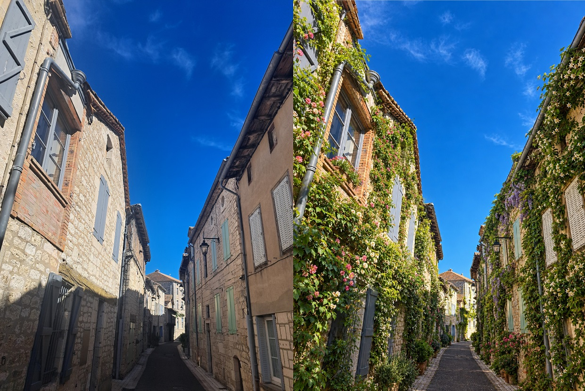
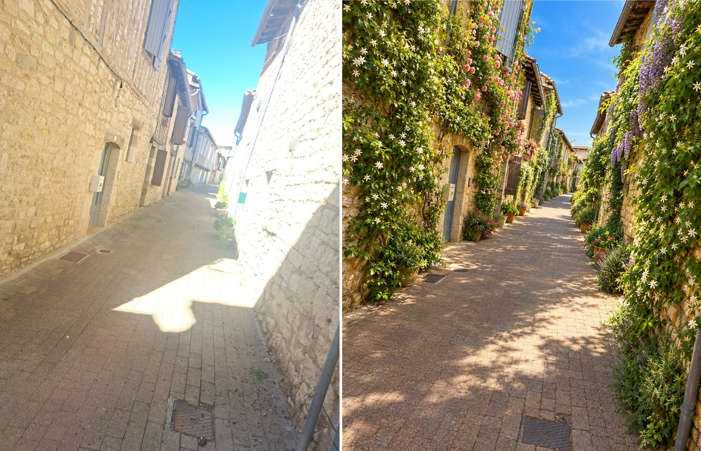
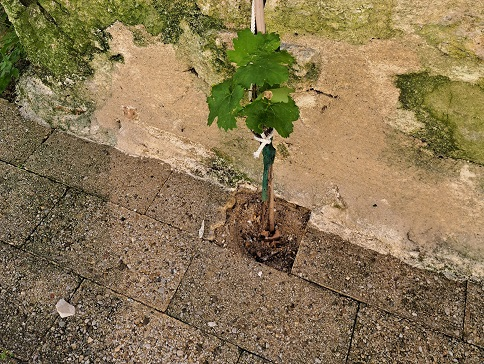
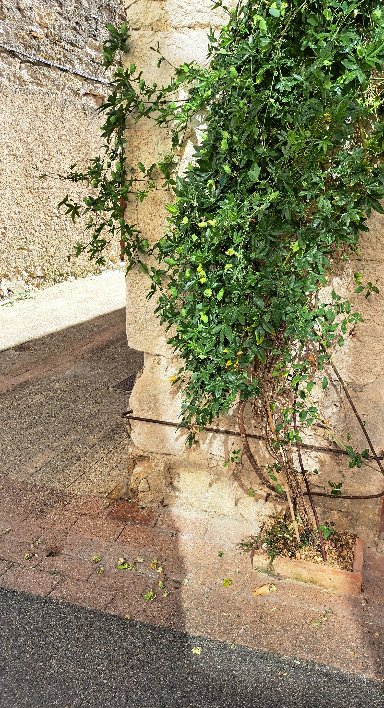
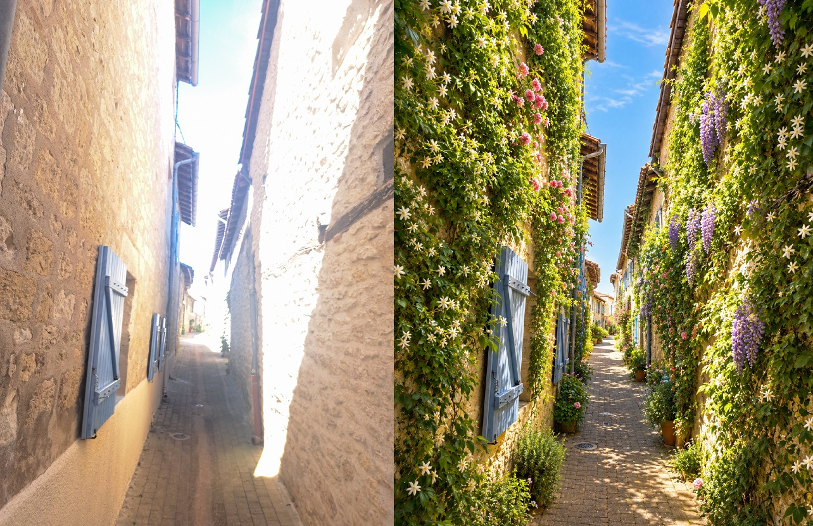

Végétalisation de nos murs

Rue Cariben Avant/Après
Végétaliser le village de
Montpezat
Adapter le village à la répétition des
canicules
La mairie n’a pas les moyens d’entretenir des plantations
en nombre
Pour avoir des résultats rapides et massifs, il faut
associer les habitants
Programme communal d’aide à la création de fosses de
plantation en pied de façade sur le domaine public
La vision : un village transformé par ses habitants et
entièrement végétalisé dans 5 ans
Pourquoi ce projet ?
Répondre concrètement à la succession de canicules
Réduire la température des façades de 4 à 6
°C .
Améliorer le confort d’été des riverains et des passants.
Permettre aux riverains, sous le contrôle de la mairie, de planter
sur les trottoirs. (C’est interdit de modifier le domaine public).
Agir : ne plus subir son environnement.
Avant / Après

Exemples de végétalisation dans les
ruelles
Un projet inspiré
d’exemples réussis
Lille – “Verdissons nos murs”
Végétaliser Banyuls, c’est permis ! (site)
Saint-Nazaire-d’Aude : La commune fournit un « Kit de plantation
» complet (plante locale, paillage, terreau et tuteur de protection) dès
que la fosse est créée par la mairie. (site)
Organismes officiels
d’accompagnement
Le CAUE 82 (Conseil d’Architecture, d’Urbanisme et de
l’Environnement) est un organisme investi d’une mission d’intérêt
public.
Il propose un certain nombre de ressources pour ce type de
projet.
caue-occitanie
: dossier permis de végétaliser
Un
partenariat simple entre la commune et les riverains
Un dispositif communal de végétalisation des
façades
Aide de la mairie pour la mise en place de fosses sur le domaine
public.
Conseil technique sur le choix de la plante.
Éventuellement, fourniture du végétal à planter.
Engagement écrit du riverain pour l’entretien, la taille et
l’arrosage.
Faire connaître le projet
Communication municipale
Affichage en mairie, sur panneaux.
Page dans IntraMuros
Réunion publique de démarrage.
Publication dans bulletin, avec convention à remplir en
janvier.
Premier bilan dans bulletin en juillet.
Fosse de plantation en
bordure de rue

Fosse: réalisation
Un
parcours simple et rapide, compréhensible par tous
Le participant signe une convention (en ligne ou sur papier).
Un rendez-vous est pris avec un représentant de la mairie : les
positions des fosses sont marquées à la bombe sur le trottoir.
Les services municipaux mettent en place les fosses et plantent
éventuellement les végétaux choisis.
La « convention » avec les
riverains
convention
Développement
de la végétation en pied de façade

fosse
Risques juridiques et
points de vigilance
Sécurité des piétons et de la circulation.
Réseaux enterrés et contraintes techniques.
Remplacement éventuel des végétaux.
Risques de non-respect des engagements du riverain.
Coût pris en charge par la
mairie
Un investissement ciblé et maîtrisé
La commune supporte le coût de la plantation.
Le budget couvre la création des fosses et les petits travaux
associés.
Les habitants prennent en charge l’entretien (arrosage et
taille).
Suivi et évaluation
Mesurer simplement les résultats
Nombre de volontaires.
Nombre de fosses créées.
Taux d’échec (pas d’entretien).
Satisfaction des habitants.
Ce que le conseil
municipal doit approuver
Le principe du programme.
La prise en charge par la mairie du coût des fosses et de certains
végétaux.
Le principe de la convention.
La campagne de communication.
Conclusion
Un projet simple, utile et fédérateur
Ce programme permet d’agir vite, à coût maîtrisé, avec les
habitants, pour adapter le village aux canicules.
Les vrais bénéfices apparaîtront 2 ou 3 ans après le lancement, le
temps que les végétaux poussent.
Un facteur clé de succès : Le portage et la mobilisation des
élus.
Avant / Après

Exemples de végétalisation
A développer
Zone pavillonnaire : végétaliser les bords de route.
Relations et contacts avec ABF et autres organismes officiels (CAUE
82).
Planning : Viser un déploiement début 2027 (Publication janvier 2027
dans le bulletin municipal; décision Conseil Municipal fin 2026)
A développer (suite)
Aides au financement : “Le Fonds vert” (État) ,” Agences de l’Eau”,
“Ma Solution pour le Climat” (Région)
Doctrine municipale de végétalisation des espaces publics (
végétalisation vs embellissement )
S’appuyer sur des associations (jardins partagés) pour une aide
(fourniture des végétaux ? plantation ?)